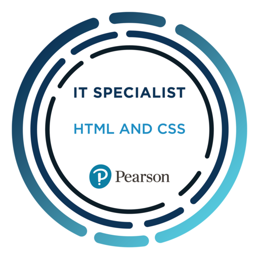
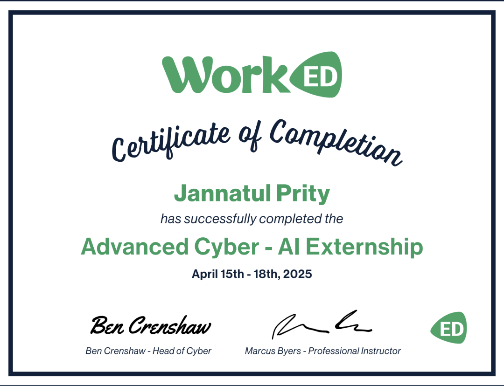

MY BACKGROUND
I was born in Bangladesh, a country located in South Asia. While my memories from early
childhood are somewhat vague, I have always felt a deep connection to my birthplace. The sense of longing for my
homeland and the presence of my loved ones remains strong. As the first generation in my family to immigrate to
the United States, I was presented with a wealth of opportunities that have significantly shaped my journey as a
young immigrant woman. This transition has allowed me to embrace new challenges while maintaining a strong
cultural connection to my roots.
MY EDUCATION
Education Bedford Academy High School
11th Grade | Dean’s List
Graduation Date: 2026
- Recognized for academic excellence and consistently achieving high grades.
Actively involved in extracurricular activities, contributing to both academic and personal growth.
Brooklyn STEAM Center
1st Year
Graduation Date: 2026
- Focus on Science, Technology, Engineering, Arts, and Mathematics (STEAM) subjects.
Gaining hands-on experience in areas such as coding, design, and innovative problem-solving.
.jpeg)

Certificate's
OSHA 10 Certificate
- The OSHA 10 certification is a basic safety course that teaches workers how to stay safe on the job. It covers common workplace hazards, how to avoid accidents, and what rights workers have. The course takes about 10 hours to complete and is often required for jobs in construction or other industries. After finishing it, you get an official OSHA 10 card as proof of training.
HTML & CSS Certificate
- The Certiport HTML and CSS certificate shows understading of the basics of building and styling websites using HTML and CSS. It's a good first step for anyone starting to learn web development.

WordED - AI Externship Certificate
- The WorkED AI Externship Certificate of Completion shows finishing of a learning program focused on AI skills and real-world projects. It proves you gained basic knowledge and experience working with AI tools and concepts.

Pinterton Science Scholars & City Tech STEM RA Certificate
- The Pinterton Science Scholars & City Tech STEM Research Academy (RA) Certificate shows the completion of a STEM research program. It means you worked on real science or technology projects, gained research experience, and developed skills in problem-solving and critical thinking.